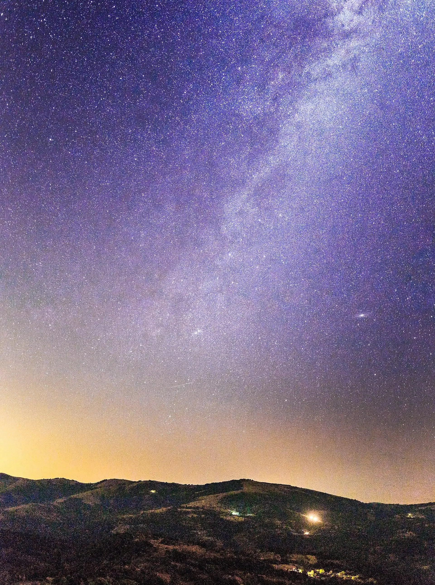

Archaeoastronomy
Reading the Sky from Kokino
A lunar calendar with a nineteen-year cycle, built by people with no writing and no instruments beyond the rock they stood on.
The ancient observatory is the most striking thing about Kokino. The space used for it runs west to east: a lower western and a higher eastern platform (A and B) with about nineteen metres of height between them, plus the western and northern astronomical platforms (C and D). A and B were used for ritual; C and D were where the watching was done.
What was observed
From Platform C, through the appropriate markers, observers followed the sunrises of the summer solstice and the winter solstice, and of the spring and autumn equinoxes. But it is the lunar markers that give Kokino its particular importance — the markers for the minimum and maximum declination of the rising full moon, in winter and in summer.
The prehistoric inhabitants of this area knew that on the same calendar day, the same phase of the moon reappears at the same place on the horizon every nineteen years.
The nineteen-year calendar
Kokino's calendar is lunar, built on the apparent movement of the moon. By watching the rising of the full moon on the eastern horizon over many years — on the days when it stands highest in the sky in winter, and lowest in summer — the observers were able to mark its maximum and minimum declinations in each season. Those extremes occur once every nineteen years.
So, to the left and right of the marker where the sun appears on the summer solstice, they cut the markers for the maximum and minimum declination of the winter full moon. These are well preserved. In the same way, to the left and right of the winter solstice marker lie the markers for the minimum and maximum declination of the moon in summer.
How the year was counted
In this calendar a lunar year ran to twelve or thirteen lunar months, each of twenty-nine or thirty days:
- Twelve of the nineteen years had twelve lunar months — six winter months of 29 days and six summer months of 30 days.
- The remaining seven years had thirteen lunar months — six winter months of 29 days and seven summer months of 30 days.
Additional stone markers were cut to measure the length of the 29- and 30-day months. The marker for the 29-day lunar month survives in good condition.
Aldebaran and Platform D
The most recent research showed that Platform D, on the northern slope, served for observing the spring and autumn equinoxes — and the positions of the star Aldebaran between roughly 2000 and 1500 BC. At that time Aldebaran sat at the equinox point, which is what dates the platform to the 21st century BC (about 2083 BC).
Like most stars, Aldebaran's position shifts, both through its own motion and through the precession of the Earth's axis. That drift is precisely why the platform can be dated at all.
There are indications that, with the knowledge they held, these observers could predict eclipses of the sun and the moon.
Seeing it yourself
The alignments still work. If you want to watch one, aim for a solstice or an equinox sunrise, arrive well before first light, and stand on Platform C. On an ordinary day the markers are still legible — you simply have to imagine the sun into them.